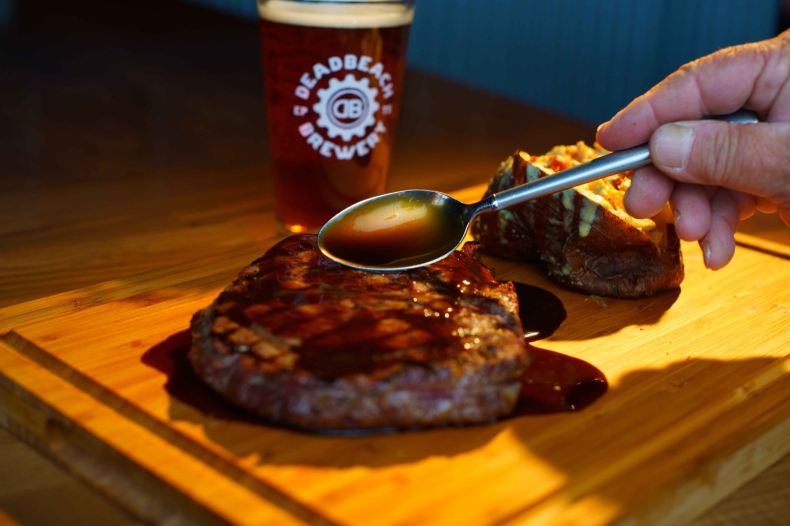

Stay Ahead with the Latest Photography Trends in Commercial Photography
A practical look at commercial image trends and how businesses can choose ideas that will still feel credible after the campaign ends.
Read ArticlePhotography, headshot, commercial production, drone, and visual strategy articles for brands, professionals, agencies, and businesses planning stronger image systems.

A practical look at commercial image trends and how businesses can choose ideas that will still feel credible after the campaign ends.
Read Article
Planning, composition, and post-production choices that make aerial photographs useful for commercial sites, architecture, and campaigns.
Read ArticleWardrobe, grooming, posture, expression, and image-use decisions that help a professional headshot feel current and credible.
Read ArticleA preparation checklist for El Paso headshot sessions, including clothing, grooming, posture, expression, and final image use.
Read ArticleHow a clear brief, shared references, realistic deadlines, and organized feedback improve a commercial photography assignment.
Read Article
How shot planning, light, detail, motion, sound, and editing can turn separate assets into one clear brand story.
Read Article
How wardrobe, expression direction, image selection, and a consistent production plan improve corporate headshot results.
Read ArticleA step-by-step way to define goals, audience, shot lists, production needs, licensing, and final image placements before a business shoot.
Read ArticleLocal commercial photography ideas for El Paso businesses that want recognizable places, people, and work to build trust with nearby buyers.
Read ArticleWhat clients should look for in studio lighting, space, equipment, comfort, direction, and a dependable production process.
Read ArticleA working process for briefs, approvals, scheduling, feedback, and delivery that keeps a commercial photography project on track.
Read ArticleHow still photography and motion can share one brief, visual direction, production day, and delivery plan for a more consistent campaign.
Read ArticleDrone photography and aerial video planning for commercial sites, architecture, progress documentation, and campaign assets.
Read ArticleWhat to prepare, what happens during the session, how images are selected, and where a finished professional headshot can be used.
Read ArticleWhat makes a strong headshot, how to compare photographers, what a session includes, and how final files support professional use.
Read ArticleHow to choose a current, approachable LinkedIn headshot with the right crop, background, expression, wardrobe, and file size.
Read ArticleHow local knowledge, pre-production, art direction, licensing, and organized delivery shape a commercial photography assignment.
Read ArticleHow to plan consistent lighting, backgrounds, crops, expressions, and delivery for a leadership group or full company team.
Read ArticleThese pages connect readers from the blog into Jordan Licon Photography's primary commercial, headshot, architecture, and aerial service areas.